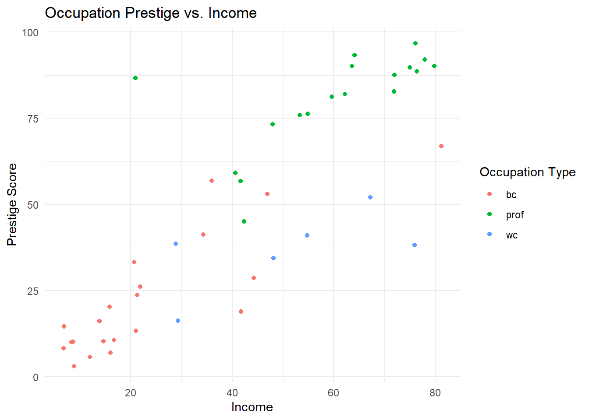

library(tidyverse)
library(car)Post-workshop exercises
Optional exercises to test your knowledge and reinforce your learning
Prep
Have the dplyr, tidyr, and ggplot cheatsheets ready open and ready.
Load packages
the code below will load the packages you need:
Load datasets
The code below will load and print the first few rows of the Duncan dataset. To find out more about this dataset, type ?Duncan in your RStudio console to open the vignette.
duncan <- as_tibble(Duncan)
print(duncan)# A tibble: 45 × 4
type income education prestige
<fct> <int> <int> <int>
1 prof 62 86 82
2 prof 72 76 83
3 prof 75 92 90
4 prof 55 90 76
5 prof 64 86 90
6 prof 21 84 87
7 prof 64 93 93
8 prof 80 100 90
9 wc 67 87 52
10 prof 72 86 88
# ℹ 35 more rowsThe code below will load and print the first few rows of the WVS dataset. To find out more about this dataset, type ?WVS in your RStudio console to open the vignette.
wvs <- as_tibble(WVS)
print(wvs)# A tibble: 5,381 × 6
poverty religion degree country age gender
<ord> <fct> <fct> <fct> <int> <fct>
1 Too Little yes no USA 44 male
2 About Right yes no USA 40 female
3 Too Little yes no USA 36 female
4 Too Much yes yes USA 25 female
5 Too Little yes yes USA 39 male
6 About Right yes no USA 80 female
7 Too Much yes no USA 48 female
8 Too Little yes no USA 32 male
9 Too Little yes no USA 74 female
10 Too Little yes no USA 30 male
# ℹ 5,371 more rowsQuestion 1
Using wvs dataset, filter the age column to include values that is more than 29. Then, select the columns age, degree, religion and poverty. Save the result to a new dataframe called wvs_filtered.
Show Answer
wvs_filtered <- wvs |>
filter(age > 29) |>
select(age, degree, religion, poverty)
print(wvs_filtered)# A tibble: 4,228 × 4
age degree religion poverty
<int> <fct> <fct> <ord>
1 44 no yes Too Little
2 40 no yes About Right
3 36 no yes Too Little
4 39 yes yes Too Little
5 80 no yes About Right
6 48 no yes Too Much
7 32 no yes Too Little
8 74 no yes Too Little
9 30 no yes Too Little
10 32 yes yes Too Little
# ℹ 4,218 more rowsQuestion 2
Update the wvs dataset by creating a dummy-coded version of the gender variable, where male = 0 and female = 1. Save the results in a new column named gender_coded.
Show Answer
wvs <- wvs |>
mutate(gender_coded = if_else(gender == "male", 0, 1))
print(wvs)# A tibble: 5,381 × 7
poverty religion degree country age gender gender_coded
<ord> <fct> <fct> <fct> <int> <fct> <dbl>
1 Too Little yes no USA 44 male 0
2 About Right yes no USA 40 female 1
3 Too Little yes no USA 36 female 1
4 Too Much yes yes USA 25 female 1
5 Too Little yes yes USA 39 male 0
6 About Right yes no USA 80 female 1
7 Too Much yes no USA 48 female 1
8 Too Little yes no USA 32 male 0
9 Too Little yes no USA 74 female 1
10 Too Little yes no USA 30 male 0
# ℹ 5,371 more rowsQuestion 3
Create a summary of the wvs dataset showing the number of observations for each country.
Show Answer
wvs |>
count(country) # A tibble: 4 × 2
country n
<fct> <int>
1 Australia 1874
2 Norway 1127
3 Sweden 1003
4 USA 1377Question 4
Using wvs dataset, calculate the average age for each combination of gender and degree status.
Show Answer
wvs |>
group_by(gender, degree) |>
summarise(avg_age = mean(age, na.rm = TRUE))`summarise()` has grouped output by 'gender'. You can override using the
`.groups` argument.# A tibble: 4 × 3
# Groups: gender [2]
gender degree avg_age
<fct> <fct> <dbl>
1 female no 45.6
2 female yes 41.0
3 male no 46.0
4 male yes 43.3Question 5
Using the wvs dataset, create a summary statistics for each country and religion (yes/no). Calculate the age mean, age median, number of observation.
Show Answer
wvs |>
group_by(country, religion) %>%
summarise(
avg_age = mean(age, na.rm = TRUE),
median_age = median(age, na.rm = TRUE),
n_observations = n()
) `summarise()` has grouped output by 'country'. You can override using the
`.groups` argument.# A tibble: 8 × 5
# Groups: country [4]
country religion avg_age median_age n_observations
<fct> <fct> <dbl> <dbl> <int>
1 Australia no 39.9 37 375
2 Australia yes 45.7 43 1499
3 Norway no 40.6 38 109
4 Norway yes 43.6 42 1018
5 Sweden no 43.7 42 15
6 Sweden yes 43.9 43 988
7 USA no 44.6 42 287
8 USA yes 48.9 46 1090Question 6
Using the wvs dataset, select the 10 oldest respondents from the USA. (hint: arrange() and slice())
Show Answer
wvs |>
filter(country == "USA", age > 50) |>
arrange(desc(age)) |>
slice(1:10)# A tibble: 10 × 7
poverty religion degree country age gender gender_coded
<ord> <fct> <fct> <fct> <int> <fct> <dbl>
1 Too Much no no USA 91 male 0
2 Too Little yes no USA 91 male 0
3 Too Much yes no USA 88 female 1
4 About Right yes no USA 88 male 0
5 Too Little yes yes USA 87 female 1
6 Too Much yes no USA 87 female 1
7 Too Little yes no USA 87 male 0
8 About Right yes no USA 87 male 0
9 About Right yes no USA 86 female 1
10 Too Much yes no USA 86 female 1Question 7
Update the wvs dataset by adding a new column called age_category that categorises each respondents based on the following criteria:
- below 18 = “youth” category
- between 18 to 34 = “young adult” category
- between 35 to 49 = “adult” category
- between 50 to 69 = “senior” category
- more than 70 = “elderly” category
Show Answer
wvs <- wvs |>
mutate(age_category = case_when(
age < 18 ~ "youth",
age >= 18 & age < 35 ~ "young adult",
age >= 35 & age < 50 ~ "adult",
age >= 50 & age < 70 ~ "senior",
age >= 70 ~ "elderly"
))
print(wvs)# A tibble: 5,381 × 8
poverty religion degree country age gender gender_coded age_category
<ord> <fct> <fct> <fct> <int> <fct> <dbl> <chr>
1 Too Little yes no USA 44 male 0 adult
2 About Right yes no USA 40 female 1 adult
3 Too Little yes no USA 36 female 1 adult
4 Too Much yes yes USA 25 female 1 young adult
5 Too Little yes yes USA 39 male 0 adult
6 About Right yes no USA 80 female 1 elderly
7 Too Much yes no USA 48 female 1 adult
8 Too Little yes no USA 32 male 0 young adult
9 Too Little yes no USA 74 female 1 elderly
10 Too Little yes no USA 30 male 0 young adult
# ℹ 5,371 more rowsQuestion 8
Recreate the following visualization:
Show Answer
wvs |> ggplot(aes(x = country, fill = poverty)) +
geom_bar(position = "dodge") +
labs(title = "Distribution of Poverty Opinions Across Countries",
x = "Country",
y = "Count",
fill = "Poverty Opinion") +
theme_minimal() Question 9
Recreate the following visualization:
Show Answer
wvs |>
ggplot(aes(x = country, fill = degree)) +
geom_bar(position = "fill") +
labs(title = "Proportion of Degree Status by Country",
x = "Country", y = "Count", fill = "Degree Status") +
theme_minimal()Question 10
Recreate the following visualization:
Show Answer
wvs |> ggplot(aes(x = country, y = age)) +
geom_boxplot() +
labs(title = "Age Distribution by Country", x = "Country", y = "Age") +
theme_minimal() +
theme(legend.position = "none")Question 11
Recreate the following visualization:
Show Answer
wvs |>
ggplot(aes(x = country, y = age)) +
geom_boxplot() +
facet_wrap(~ religion) +
labs(title = "Age Distribution by Country and Religion",
x = "Country", y = "Age") +
theme_minimal() Question 12
Recreate the following visualization using duncan dataset:
Show Answer
duncan |>
ggplot(aes(x = income, y = prestige, color = type)) +
geom_jitter() +
labs(title = "Occupation Prestige vs. Income",
x = "Income",
y = "Prestige Score",
color = "Occupation Type") +
theme_minimal()
Question 13
Recreate the following visualization using duncan dataset:
Show Answer
duncan |>
ggplot(aes(x = type, y = income)) +
geom_boxplot() +
labs(title = "Income Distribution by Occupation Type",
x = "Occupation Type",
y = "Income") +
theme_minimal()Question 14
Recreate the following visualization using duncan dataset:
Show Answer
duncan |>
ggplot(aes(x = prestige, y = income, color = type)) +
geom_jitter() +
geom_smooth(method = "lm") +
labs(
title = "Relationship between Prestige and Income",
subtitle = "Grouped by Occupation Type",
x = "Prestige Score",
y = "Income",
color = "Occupation Type"
) +
theme_minimal()`geom_smooth()` using formula = 'y ~ x'Question 15
Using duncan dataset:
- Examine the correlation between
prestigescores andeducation. - Analyze the relationship between
incomeandprestigescores.
Show Answer
cor.test(duncan$prestige, duncan$education)
Pearson's product-moment correlation
data: duncan$prestige and duncan$education
t = 10.668, df = 43, p-value = 1.171e-13
alternative hypothesis: true correlation is not equal to 0
95 percent confidence interval:
0.7445746 0.9163112
sample estimates:
cor
0.8519156 Show Answer
cor.test(duncan$prestige, duncan$income)
Pearson's product-moment correlation
data: duncan$prestige and duncan$income
t = 10.062, df = 43, p-value = 7.144e-13
alternative hypothesis: true correlation is not equal to 0
95 percent confidence interval:
0.7217665 0.9080298
sample estimates:
cor
0.8378014 Question 16
Using duncan dataset, compare prestige scores across different occupational categories using ANOVA.
Show Answer
duncan_anova <- aov(prestige ~ type, data=duncan)
summary(duncan_anova) Df Sum Sq Mean Sq F value Pr(>F)
type 2 33090 16545 65.57 1.21e-13 ***
Residuals 42 10598 252
---
Signif. codes: 0 '***' 0.001 '**' 0.01 '*' 0.05 '.' 0.1 ' ' 1Question 17
Using duncan dataset, create a regression model that predicts income based on occupational prestige and education scores.
library(huxtable)Show Answer
duncan_model <- lm(income ~ prestige + education, data = duncan)
huxreg("income" = duncan_model)| income | |
|---|---|
| (Intercept) | 10.426 * |
| (4.164) | |
| prestige | 0.624 *** |
| (0.125) | |
| education | 0.032 |
| (0.132) | |
| N | 45 |
| R2 | 0.702 |
| logLik | -179.902 |
| AIC | 367.805 |
| *** p < 0.001; ** p < 0.01; * p < 0.05. | |
Question 18
Using the wvs dataset, examine the relationship between religion and poverty perception.
Show Answer
wvs_chisq <- chisq.test(table(wvs$religion, wvs$poverty))
print(wvs_chisq)
Pearson's Chi-squared test
data: table(wvs$religion, wvs$poverty)
X-squared = 0.083005, df = 2, p-value = 0.9593Question 19
Using the wvs dataset, examine whether there is a significant difference in the average age between individuals with and without a university degree.
Show Answer
wvs_ttest <- t.test(age ~ degree, data = wvs)
print(wvs_ttest)
Welch Two Sample t-test
data: age by degree
t = 7.0571, df = 2029, p-value = 2.325e-12
alternative hypothesis: true difference in means between group no and group yes is not equal to 0
95 percent confidence interval:
2.674321 4.732708
sample estimates:
mean in group no mean in group yes
45.82775 42.12423 Question 20
Using wvs dataset, compare the mean of age across different countries and age categories (see Question 7 to create age_category), and investigate if there is any significant difference. Conduct the post-hoc test if needed.
Show Answer
wvs_anova <- aov(age ~ country + age_category, data = wvs)
summary(wvs_anova) Df Sum Sq Mean Sq F value Pr(>F)
country 3 17399 5800 235.9 <2e-16 ***
age_category 3 1424858 474953 19319.9 <2e-16 ***
Residuals 5374 132113 25
---
Signif. codes: 0 '***' 0.001 '**' 0.01 '*' 0.05 '.' 0.1 ' ' 1